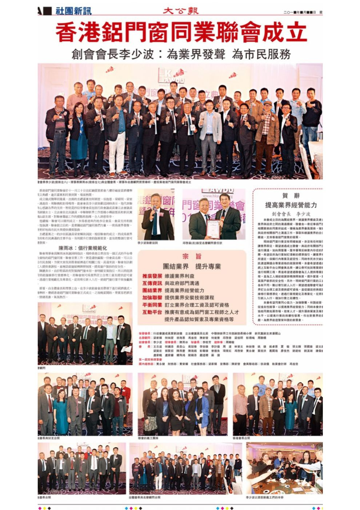

緣起
為業界發聲，為市民服務
聯會成立前，香港沒有一個正式平台讓市民找到合資格的鋁門窗同業。聯會的首要工作，是編製一份公開的會員名冊，方便市民找到專業師傅進行相關工程。
長遠而言，聯會希望為工人提供專業課程、推動設立鋁窗師傅牌照制度，並促請政府為窗戶安裝及維修訂立清晰的標準指引，提高窗戶裝拆的安全性。
聯會亦致力促進同業良性競爭，協助同業拓展市場、培育人才，提升行業的持續發展。

創會成員
升威 LE-RELAX
聯會由升威 LE-RELAX 牽頭，聯同一眾業界同行於 2015 年成立，為全港鋁門窗業界而設。升威於 1986 年在香港創立，是本地鋁門窗、浴屏及玻璃製造及批發商，於中山設有自家廠房，由玻璃加工、窗鉸到成品組裝均自家製造，並列入房屋委員會認可供應商名單。
升威只做供應，不做安裝。它的客戶是工程公司及師傅，包括不少聯會會員。業主可向會員師傅指定用料。

宗旨
團結業界 · 提升專業
推廣發展
維護業界利益
互傳資訊
與政府部門溝通
團結業界
提高業界經營能力
加強聯繫
提供業界安裝技術課程
平衡同業
訂立業界合理工資及認可資格
互動平台
推廣有意成為鋁門窗工程師之人才，提升產品認知質素及專業資格
成果
聯會的工作
屋宇署
向屋宇署反映改善收表時間，屋宇署同意改善並重新調配人手。
驗窗卡
聯會獲 TVB 邀請講解業界問題，屋宇署其後新增驗窗卡以識別鋁窗專業人士。
培訓
成功爭取職業訓練局開辦鋁窗檢驗相關課程，並與 IVE 合辦行業課程。
法律支援
會員因牌照問題遭法律起訴時，由聯會顧問律師協助並提供法律意見。
考察
舉辦參觀鋁型材廠、玻璃廠及鋁門窗廠，讓會員了解生產過程。
組織架構
聯會架構
創會會長
李少波先生
理事會長
陳雨冰先生
秘書長
郭俊浩先生
總幹事
曾美雲小姐
會長
- 王志達
- 張文輝
- 葉效洪
- 林榮文
- 姚卓恩
- 廖俊杰
- 劉建枝
- 劉溪湖
- 龐道穗
- 周淩
- 夏敏
- 陳海錫
- 賴飛鴻
- 何鎮添
- 彭聲雄
- 葛國海
- 謝錦添
- 吳杏山
- 梁文超
- 曾德魚
- 盧家幟
- 吳冠偉
- 林劍偉
- 郭賢招
- 盧家鎌
- 姚雄
- 梁賀宏
- 李計德
- 陳西慶
- 黃永健
- 潘偉能
- 蘇捷
第一屆常務理事會
| 部門 | 負責人 |
|---|---|
| 國內總務部 | 黃永健先生 |
| 財務部 | 林瀛杰先生 |
| 會員聯絡部 | 鄭凱程小姐、劉家麗小姐 |